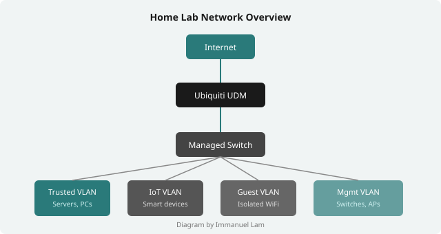

Background
I got into computers pretty young, mostly by breaking things and having to fix them. At some point that turned into an actual home lab, which I'm still not sure was a good idea financially.
Homelabbing
It started with an old desktop I wasn't using, a few Docker containers, and a YouTube rabbit hole about self-hosting. That was a few years ago. Now it's a proper rack with a NAS, a couple of servers, a managed switch, and way too many ethernet cables running through the walls.

Networking
I run a Ubiquiti UniFi setup at home — Dream Machine, managed switches, a couple of APs. The main thing I've been doing with it is VLAN segmentation, mostly because I don't trust my smart TV on the same network as everything else. IoT devices go on their own VLAN and can't talk to anything.
Other stuff I've set up or learned along the way:
- VLAN segmentation (IoT, trusted, guest, management)
- DNS-over-HTTPS and local DNS resolution with Pi-hole
- Reverse proxies (Nginx Proxy Manager, Traefik)
- Wireguard VPN for remote access
- Port forwarding, NAT, and firewall rules
Self-Hosted Services
Most of this started because I didn't want to pay for things I could run myself, or I wanted to keep my data off someone else's server. Some of it is still running. Nextcloud technically works but I haven't touched it in months.
| Service | Description | Tech / Stack |
|---|---|---|
| Vaultwarden | Self-hosted Bitwarden-compatible password manager | Docker, Rust, SQLite |
| Nginx Proxy Manager | Reverse proxy with GUI and automatic SSL via Let's Encrypt | Docker, Nginx, Certbot |
| Pi-hole | Network-level ad and tracker blocking with local DNS | Raspberry Pi, dnsmasq |
| Nextcloud | Self-hosted file sync and collaboration platform | Docker, PHP, MariaDB |
| Portainer | Container management UI for Docker environments | Docker, Go |
| Wireguard | Fast, modern VPN tunnel for secure remote access | Linux kernel module |
| Uptime Kuma | Self-hosted status and uptime monitoring dashboard | Docker, Node.js, SQLite |
Web development
I picked up web dev because I needed dashboards and frontends for my self-hosted stuff. Started with plain HTML and CSS, then JavaScript when I needed things to actually do things. I've used React for a couple of personal projects and Flask for backend APIs. Nothing production, just personal stuff.
- HTML5 and CSS3
- JavaScript (DOM, fetch)
- React (personal projects)
- Python / Flask
- Git
This site is plain HTML and CSS with no JavaScript. Partly because the brief said so, partly because it's a good constraint.